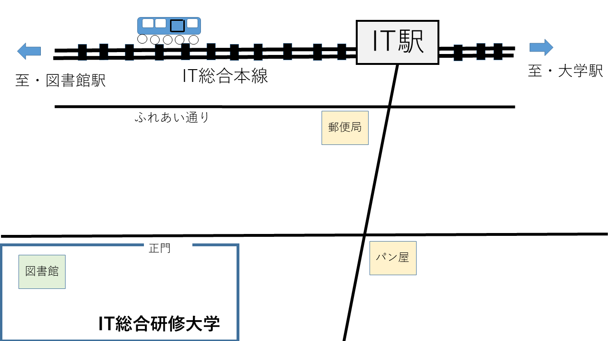

IT総合研修大学図書館
お知らせ
利用案内
中央図書館
医学分館
経済学部分館
事務用
各種サービスへのリンク
コレクション
館長あいさつ
お問合せ
お知らせ
このIT総合研修大学図書館は<
実際には存在しません
>。
受講生のみなさまの心の中<only>で存在をしています。
利用案内
（１）開館
曜日
時刻
月～金
9時～17時
土
10時～15時
日
休館
（２）アクセスマップ

各種サービスへのリンク
一覧
CiNii Research
国立国会図書館サーチ
コレクション紹介
The IT総合研修大学所蔵コレクション
IT総合研修大学で集めたつもりのコレクションです。実際は存在しません。
館長あいさつ
館長から以下の挨拶をいただきました。
「図書館は成長する有機体」と申します。IT総合研修図書館では...
お問合せ
お問合せフォームへのリンク
ページのトップへ
---------------------------
IT総合研修図書館運営委員会